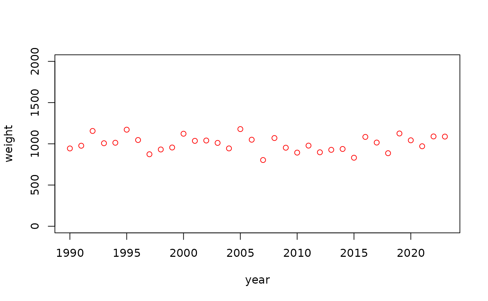
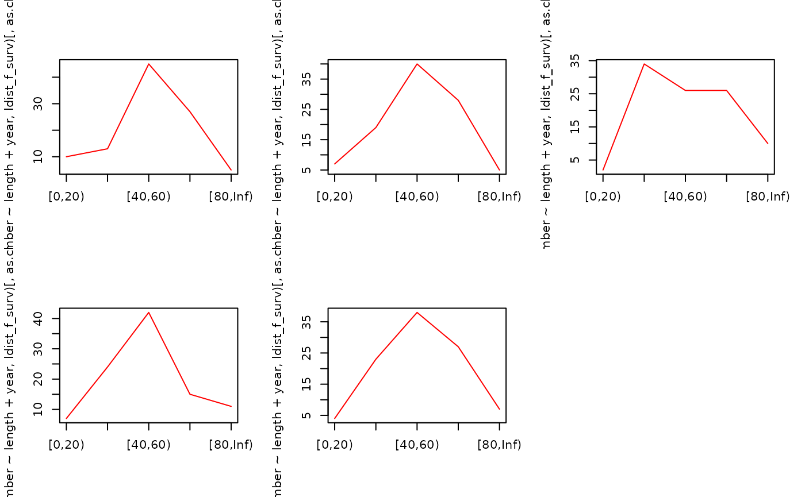

vignettes/introduction-single-stock.Rmd
introduction-single-stock.RmdThis vignette walks through a script that will generate a gadget3 model, explaining concepts along the way.
Code blocks that make up the gadget3 script are marked in blue, like this:
### Introduction to gadget3: A single stock modelWhen combined they will form a full model, see the appendix for the entire script.
Gadget3 is a marine modelling R package, but it is not in itself an ecosystem model. Instead, it gives you building blocks (or actions) that can be assembled to produce as complex model as your situation requires. This can then be converted into other forms, most importantly a TMB objective function or an R function, which can then be optimised and run to generate reporting.
As the name suggests, it’s designed to be a successor to the previous gadget modelling framework. The actions currently available are designed to be very similar, if not identical, to the components present in gadget2. If you are familiar with previous versions of gadget then you will find the naming very similar, and translation of old input files to gadget3 can be done in a rote fashion.
Gadget3 is the core part of what is known as the gadget framework, a set of packages that are designed to work together to produce ecosystem models.
These packages are loosely coupled; you do not need everything installed to create a gadget3 model. However, when they will prove useful it will be mentioned here.
The gadget3 package can be installed via. CRAN:
install.packages('gadget3')The full set of packages can be installed with:
install.packages('MFDB')
remotes::install_github('gadget-framework/gadgetutils')
remotes::install_github('gadget-framework/gadgetplots')
remotes::install_github('gadget-framework/g3experiments')As opposed gadget2 and other modelling frameworks, there is no input data format. Instead, the model configuration is written as an R script. This document will walk through the parts of a model script for a single-species model, introducing concepts along the way.
The first step in any script is to load gadget3. We will
also use dplyr when formatting input data:
A gadget3 model is defined as a list of actions. Actions are snippets of code that define processes in a model.
To start with, we will add the g3a_time() to our list of
actions:
This acts as timekeeping for our model, starting in year 1979 and progressing until 2023. Each year will have 4 time steps in, of equal length.
As a convention, we build up an actions array of
everything required, allowing sections to be added/removed as
necessary.
Ultimately, this list will be converted to either R or TMB code with
with g3_to_r() or g3_to_tmb() respectively. We
can try this already with our time action, and generate a function that
will count years & steps:
g3_to_r(actions_time)function (param)
{
stopifnot("retro_years" %in% names(param))
assert_msg <- function(expr, message) {
if (isFALSE(expr)) {
warning(message)
return(TRUE)
}
return(FALSE)
}
cur_time <- -1L
stopifnot("project_years" %in% names(param))
project_years <- param[["project_years"]]
cur_year <- 0L
start_year <- 1979L
step_count <- length(step_lengths)
cur_year_projection <- FALSE
end_year <- 2023L
cur_step <- 0L
cur_step_size <- step_lengths[[1]]/12
cur_step_final <- FALSE
retro_years <- param[["retro_years"]]
total_steps <- length(step_lengths) * (end_year - retro_years -
start_year + project_years) + length(step_lengths) -
1L
nll <- 0
while (TRUE) {
{
comment("g3a_time: Start of time period")
cur_time <- cur_time + 1L
if (cur_time == 0 && assert_msg(param[["retro_years"]] >=
0, "retro_years must be >= 0"))
return(NaN)
if (cur_time == 0 && assert_msg(project_years >=
0, "project_years must be >= 0"))
return(NaN)
cur_year <- start_year + (cur_time%/%step_count)
cur_year_projection <- cur_year > end_year - param[["retro_years"]]
cur_step <- (cur_time%%step_count) + 1L
cur_step_size <- step_lengths[[cur_step]]/12
cur_step_final <- cur_step == step_count
}
{
if (cur_time > total_steps)
return(nll)
}
}
}
<bytecode: 0x560a742a1fa0>
<environment: 0x560a770d34d8>
g3_to_tmb(actions_time)#include <TMB.hpp>
template<class Type>
Type objective_function<Type>::operator() () {
DATA_SCALAR(reporting_enabled); DATA_UPDATE(reporting_enabled);
PARAMETER(retro_years);
auto assert_msg = [](bool expr, std::string message) -> bool {
if (!expr) { Rf_warning(message.c_str()); return TRUE; }
return FALSE;
};
int cur_time = -1;
PARAMETER(project_years);
int cur_year = 0;
int start_year = 1979;
vector<int> step_lengths(4); step_lengths.setConstant(3);
auto step_count = (step_lengths).size();
int cur_year_projection = false;
int end_year = 2023;
int cur_step = 0;
auto cur_step_size = step_lengths ( 0 ) / (double)(12);
int cur_step_final = false;
auto total_steps = (step_lengths).size()*(end_year - retro_years - start_year + project_years) + (step_lengths).size() - 1;
Type nll = (double)(0);
while (true) {
{
// g3a_time: Start of time period;
cur_time += 1;
if ( cur_time == 0 && assert_msg(retro_years >= (double)(0), "retro_years must be >= 0") ) {
return NAN;
}
if ( cur_time == 0 && assert_msg(project_years >= (double)(0), "project_years must be >= 0") ) {
return NAN;
}
cur_year = start_year + (((int) cur_time) / ((int) step_count));
cur_year_projection = cur_year > end_year - retro_years;
cur_step = (cur_time % step_count) + 1;
cur_step_size = step_lengths ( cur_step - 1 ) / (double)(12);
cur_step_final = cur_step == step_count;
}
{
if ( cur_time > total_steps ) {
return nll;
}
}
}
}After actions, the other key concept in a gadget3 model is a stock. These are the means to describe populations within your model. For simpler scenarios such as here, stocks map directly to a species. However, more complicated models may have one stock per-maturation-stage, sex or both.
We define a stock with the g3_stock() and associated
g3s_* functions, for example:
Here we define a stock called “fish” with length bins 10..100, then add an area to live in & 5 age bins.
Ultimately, the stock functions define the structure of the arrays
that will hold the state of that stock within gadget3. We can use
g3_stock_instance() to see an example of the array
used:
# aperm() re-orders dimensions for more compact printing
aperm(g3_stock_instance(fish, 0), c(1,3,2))## , , area = IXa
##
## age
## length age1 age2 age3 age4 age5
## 10:20 0 0 0 0 0
## 20:30 0 0 0 0 0
## 30:40 0 0 0 0 0
## 40:50 0 0 0 0 0
## 50:60 0 0 0 0 0
## 60:70 0 0 0 0 0
## 70:80 0 0 0 0 0
## 80:90 0 0 0 0 0
## 90:100 0 0 0 0 0
## 100:Inf 0 0 0 0 0For example, the abundance and mean weight of the stock will be stored in one of these arrays within the model.
Now we have a stock, we can add apply population dynamics
actions, and save them in the actions array from
earlier:
actions_fish <- list(
g3a_growmature(fish, g3a_grow_impl_bbinom(
maxlengthgroupgrowth = 4L)),
g3a_naturalmortality(fish),
g3a_initialconditions_normalcv(fish),
g3a_renewal_normalparam(fish,
run_step = 2),
g3a_age(fish),
NULL)
actions_likelihood_fish <- list(
g3l_understocking(list(fish), nll_breakdown = TRUE),
NULL)
actions <- c(actions, actions_fish, actions_likelihood_fish)Each of these g3a_* actions will have a 1:1 parallel
with gadget2 stockfile components, so if you are familiar with these
config files will do what you expect.
For each action you can click through to the reference to get more information on what it does, but in summary we have defined:
g3a_growmature(): The growth modelg3a_naturalmortality(): Natural mortality of our
stockg3a_initialconditions_normalcv(): Initial recruitment,
defining numbers & mean weights for the start of the modelg3a_renewal_normalparam(): Recruitment occuring every
spring (run_step = 2), independent of stock statusg3a_age(): Move fish through age groups at the end of a
yearg3l_understocking(): A penalty applied to the
likelihood used to prevent more fish being eaten/fished than is
available.There are more actions available besides these, for instance
g3a_spawn() can be used for recruitment dependent on stock
size instead of g3a_renewal_normalparam(). For a full list,
see ??gadget3::"G3 action" or the package reference
index.
Likelihood actions are actions that will sum their output into the model’s overall likelihood score, analogous to gadget2’s likelihood components.
The order of these actions as we have defined them is not preserved.
When a model runs, the steps will not happen in the above order, they
will be re-ordered to match the standard action order, see
?g3_action_order.
The definition above should look quite barren, bar
maxlengthgroupgrowth we have not provided any figures for
the stock dynamics.
The defaults for all actions define model parameters that can be set as fixed values or optimised later, rather than baking them into the model.
For instance, we can see that g3a_naturalmortality()
creates a parameter for M by default:
head(g3a_naturalmortality)##
## 1 function (stock, mortality_f = g3a_naturalmortality_exp(), run_f = TRUE,
## 2 run_at = g3_action_order$naturalmortality)
## 3 {
## 4 out <- new.env(parent = emptyenv())
## 5 action_name <- unique_action_name()
## 6 stock__num <- g3_stock_instance(stock, 0)
head(g3a_naturalmortality_exp)##
## 1 function (param_f = g3_parameterized("M", by_stock = by_stock,
## 2 by_age = TRUE), by_stock = TRUE, action_step_size_f = ~cur_step_size)
## 3 {
## 4 f_substitute(~exp(-(param_f) * action_step_size_f), list(param_f = param_f,
## 5 action_step_size_f = action_step_size_f))
## 6 }Without any arguments, we use
g3a_naturalmortality_exp(), which sets M to be
g3_parameterized("M", by_stock = TRUE, by_age = TRUE). This
tells gadget3 that a parameter M should be expected by the
model, that will both be broken down by stock (i.e. will include the
name of our stock), and each age within that stock.
We can define a model with just g3a_time() and
g3a_initialconditions_normalcv() to see the end result. To
be able to run the function you need to provide a list of parameter
values, the format of this list is defined by the attached parameter
template:
simple_actions <- list(
g3a_time(1990, 1991),
g3a_initialconditions_normalcv(fish))
simple_fn <- g3_to_r(c(simple_actions, list(
g3a_report_detail(simple_actions) )))
params <- attr(simple_fn, 'parameter_template')
unlist(params)## retro_years fish.Linf fish.K fish.t0
## 0.0 1.0 1.0 0.0
## fish.lencv fish.init.scalar fish.init.1 fish.init.2
## 0.1 1.0 1.0 1.0
## fish.init.3 fish.init.4 fish.init.5 fish.M.1
## 1.0 1.0 1.0 0.0
## fish.M.2 fish.M.3 fish.M.4 fish.M.5
## 0.0 0.0 0.0 0.0
## init.F recage fish.walpha fish.wbeta
## 0.0 0.0 0.0 0.0
## report_detail project_years
## 1.0 0.0g3a_report_detail() adds standard reporting to our
model, we will cover it’s use later.
We can fill in these values and run the model:
params$fish.init.scalar <- 10
params$fish.init.1 <- 10
params$fish.init.2 <- 10
params$fish.init.3 <- 10
params$fish.init.4 <- 10
params$fish.init.5 <- 10
params$fish.M.1 <- 0.15
params$fish.M.2 <- 0.15
params$fish.M.3 <- 0.15
params$fish.M.4 <- 0.15
params$fish.M.5 <- 0.15
params$init.F <- 0.5
params$recage <- 0
params$fish.Linf <- max(g3_stock_def(fish, "midlen"))
params$fish.K <- 0.3
params$fish.t0 <- g3_stock_def(fish, "minage") - 0.8
params$fish.lencv <- 0.1
params$report_detail <- 1
# Run model and pull out final abundance from the result
abund <- attr(simple_fn(params), "detail_fish__num")[,area = 'IXa', , time = '1990-01']
par(mfrow=c(3, 2), mar = c(2,2,1,0))
for (a in dimnames(abund)$age) barplot(abund[, age = a], main = a)Altering K results in corresponding changes to the stock structure:
Fleets in gadget3 are modelled as stock objects, which predate on their target stocks.
To define a fleet, we need to introduce historical data into the model. In our case we will generate random data, but the aggretation steps would apply regardless.
# Fleet data for f_surv #################################
# Landings data: For each year/step/area
expand.grid(year = 1990:1994, step = 2, area = 'IXa') |>
# Generate a random total landings by weight
mutate(weight = rnorm(n(), mean = 1000, sd = 100)) |>
# Assign result to landings_f_surv
identity() -> landings_f_survHere we use expand.grid() to generate a
data.frame() with all possible
year/step/area cominations. We then use
dplyr::mutate() to add a weight column to this
table, using rnorm() to generate random numbers distributed
about a mean.
The identity() function is a do-nothing function that
passes through the input. We use this to move the assignment onto it’s
own line.
The end result is a data.frame() of total biomass
figures:
landings_f_surv## year step area weight
## 1 1990 2 IXa 943.9524
## 2 1991 2 IXa 976.9823
## 3 1992 2 IXa 1155.8708
## 4 1993 2 IXa 1007.0508
## 5 1994 2 IXa 1012.9288
Note that we haven’t provided data for all years/steps, as we’ll
assume this fleet only works in spring. For more information on how this
works, see vignette("incorporating-observation-data").
Next we generate some length-distribution data:
# Length distribution data: Randomly generate 100 samples in each year/step/area
expand.grid(year = 1990:1994, step = 2, area = 'IXa', length = rep(NA, 100)) |>
# Generate random lengths for these samples
mutate(length = rnorm(n(), mean = 50, sd = 20)) |>
# Save unagggregated data into ldist_f_surv.raw
identity() -> ldist_f_surv.raw
# Aggregate .raw data
ldist_f_surv.raw |>
# Group into length bins
group_by(
year = year,
step = step,
length = cut(length, breaks = c(seq(0, 80, 20), Inf), right = FALSE) ) |>
# Report count in each length bin
summarise(number = n(), .groups = 'keep') |>
# Save into ldist_f_surv
identity() -> ldist_f_survAs before, expand.grid() and mutate()
generate a table with random lengths distributed about the mean. This is
our unaggregated data, which we save using assign() so we
can see the end result:
head(ldist_f_surv.raw)## year step area length
## 1 1990 2 IXa 84.30130
## 2 1991 2 IXa 59.21832
## 3 1992 2 IXa 24.69878
## 4 1993 2 IXa 36.26294
## 5 1994 2 IXa 41.08676
## 6 1990 2 IXa 74.48164We next use group_by() and cut() to
aggregate by year, step & length bins. cut() is
responsible for binning continuous data. We can see what it does by
running for single values:
## [1] [40,60)
## Levels: [0,20) [20,40) [40,60) [60,80) [80,Inf)Note that we add Inf to the end of the list of breaks,
to create a plus-group. We also specify right = FALSE so
that the groups are closed on the left.
Also note that our breaks aren’t the same as our stock definition,
this is allowed and gadget3 will re-aggregate the model data to match.
For more information on how this works, see
vignette("incorporating-observation-data").
Finally, summarise counts the number in each group and puts the result into a number column. The end result looks like:
summary(ldist_f_surv)## year step length number
## Min. :1990 Min. :2 [0,20) :5 Min. : 2.00
## 1st Qu.:1991 1st Qu.:2 [20,40) :5 1st Qu.: 6.00
## Median :1992 Median :2 [40,60) :5 Median :19.50
## Mean :1992 Mean :2 [60,80) :5 Mean :19.23
## 3rd Qu.:1993 3rd Qu.:2 [80,Inf):5 3rd Qu.:26.75
## Max. :1994 Max. :2 NA's :1 Max. :46.00
years <- unique(ldist_f_surv$year)
par(mfrow=c(2, ceiling(length(years) / 2)))
for (y in years) plot(as.data.frame(ldist_f_surv) |>
filter(year == y & step == 2) |>
select(length, number), main = y, ylim = c(0, 60))
Finally, we can apply the same techniques to generate and aggregate age-length data:
# Assume 5 * 5 samples in each year/step/area
expand.grid(year = 1990:1994, step = 2, area = 'IXa', age = rep(NA, 5), length = rep(NA, 5)) |>
# Generate random lengths/ages for these samples
mutate(length = rnorm(n(), mean = 50, sd = 20)) |>
# Generate random whole numbers for age
mutate(age = floor(runif(n(), min = 1, max = 5))) |>
# Group into length/age bins
group_by(
year = year,
step = step,
age = age,
length = cut(length, breaks = c(seq(0, 80, 20), Inf), right = FALSE) ) |>
# Report count in each length bin
summarise(number = n(), .groups = 'keep') ->
aldist_f_survThe end result is a data.frame() with
year/step/age/length/number:
summary(aldist_f_surv)## year step age length number
## Min. :1990 Min. :2 Min. :1.000 [0,20) : 3 Min. :1.000
## 1st Qu.:1991 1st Qu.:2 1st Qu.:1.250 [20,40) :14 1st Qu.:1.000
## Median :1992 Median :2 Median :3.000 [40,60) :19 Median :2.000
## Mean :1992 Mean :2 Mean :2.552 [60,80) :15 Mean :2.155
## 3rd Qu.:1993 3rd Qu.:2 3rd Qu.:3.750 [80,Inf): 5 3rd Qu.:3.000
## Max. :1994 Max. :2 Max. :4.000 NA's : 2 Max. :6.000
years <- unique(aldist_f_surv$year)
ages <- unique(aldist_f_surv$age)
par(mfrow=c(length(years), length(ages)), mar = c(2,2,1,0))
for (y in years) for (a in ages) plot(as.data.frame(ldist_f_surv) |>
filter(year == y & step == 2) |>
select(length, number), main = sprintf("year = %d, age = %s", y, a), ylim = c(0, 60))A fleet, f_surv, is defined in much the same way as our
stock above, however with a different set of actions:
# Create fleet definition for f_surv ####################
f_surv <- g3_fleet("f_surv") |> g3s_livesonareas(area_names["IXa"])We define the stock with g3_fleet() instead of
g3_stock(), as a fleet isn’t divided into length or age
bins. Simiarly, g3s_age() to divide into age bins isn’t
relevant.
actions_f_surv <- list(
g3a_predate_fleet(
f_surv,
list(fish),
suitabilities = g3_suitability_exponentiall50(),
catchability_f = g3a_predate_catchability_totalfleet(
g3_timeareadata("landings_f_surv", landings_f_surv, "weight", areas = area_names))),
NULL)
actions <- c(actions, actions_f_surv)The only action of f_surv is to predate
fish. We define this with g3a_predate_fleet(),
setting:
g3_suitability_exponentiall50()
a logarithmic dependence on the difference between length of individuals
to
,
the length of prey with a 50% probability of predationg3a_predate_catchability_totalfleet() to
define effort based on total biomass caught, and
g3_timeareadata() to provide a timeseries table of landings
data generated aboveFor other possible settings, follow the links to the function definitions.
Finally we define likelihood actions using
g3l_catchdistribution(), to compare modelled catch against
our length & age-length distribution data generated above.
actions_likelihood_f_surv <- list(
g3l_catchdistribution(
"ldist_f_surv",
obs_data = ldist_f_surv,
fleets = list(f_surv),
stocks = list(fish),
function_f = g3l_distribution_sumofsquares(),
area_group = area_names,
report = TRUE,
nll_breakdown = TRUE),
g3l_catchdistribution(
"aldist_f_surv",
obs_data = aldist_f_surv,
fleets = list(f_surv),
stocks = list(fish),
function_f = g3l_distribution_sumofsquares(),
area_group = area_names,
report = TRUE,
nll_breakdown = TRUE),
NULL)
actions <- c(actions, actions_likelihood_f_surv)Note that the only difference between the 2 likelihood actions is the
structure of the inputted data. aldist_f_surv unlike
ldist_f_surv has an age column, gadget3 will detect this
and group the modelled catch accordingly. Similarly neither data.frame
has the full range of years, so comparisons will be made outside those
ranges. For more detail on what can be done here, see
vignette("incorporating-observation-data").
function_f defines the method of comparison between
modelled catch & observation data, once aggregation has been done.
g3l_distribution_sumofsquares() in this case compares the
sum of squared difference. For more options on what to use here, follow
the links to the reference.
To add futher fleets to your model, just repeat the same code with a different fleet name.
Measures of abudnance, such as commercial CPUE data, can be added as
observation data by adding g3l_abundancedistribution()
likelihood actions:
# Create abundance index for si_cpue ########################
# Generate random data
expand.grid(year = 1990:1994, step = 3, area = 'IXa') |>
# Fill in a weight column with total biomass for the year/step/area combination
mutate(weight = runif(n(), min = 10000, max = 100000)) ->
dist_si_cpue
actions_likelihood_si_cpue <- list(
g3l_abundancedistribution(
"dist_si_cpue",
dist_si_cpue,
stocks = list(fish),
function_f = g3l_distribution_surveyindices_log(alpha = NULL, beta = 1),
area_group = area_names,
report = TRUE,
nll_breakdown = TRUE),
NULL)
actions <- c(actions, actions_likelihood_si_cpue)We create a data.frame() with
year/step/area/weight columns, and
input this into a likelihood action as before with our fleet.
The key differences between the catch distribution above are:
g3l_abundancedistribution() instead of
g3l_catchdistribution(), which compares model abundance
instead of catch from a fleet.g3l_distribution_surveyindices_log() to perform
linear regression to calculate likelihood score. We have fixed beta (the
slope) of the regression, only alpha will be estimated. We could reverse
this, or estimate both by setting to NULL.At this point, we are ready to convert our model into code:
# Create model objective function ####################
# Apply bounds in code - the other option would be using control = list(lower = g3_tmb_lower(params.in), ...)
model_code <- g3_to_tmb(c(actions, list(
g3a_report_detail(actions),
g3l_bounds_penalty(actions) )))g3_to_tmb() will take our list of actions and convert it
into C++ code suitable for use with TMB.
g3a_report_detail() and
g3l_bounds_penalty() add further actions to the model,
based on the actions already within it:
g3a_report_detail(): Adds abundance / catch reporting
suitable for use with gadgetutils::g3_fit() and
gadgetplots::gadget_plots()
g3l_bounds_penalty(): Adds a large likelihood penalty
for any parameter straying outside the lower/upper bounds. This allows
us to use the lower/upper bounds for parameters with optimising methods
that don’t support them natively.To be able to run this model, we need to provide values (or initial
guesses) for parameters. Earlier we used g3_to_r() and saw
the resultant parameter template. With g3_to_tmb() we can
do the same, however the template is more complex:
simple_code <- g3_to_tmb(list(
g3a_time(1990, 1991),
g3a_naturalmortality(fish) ))
attr(simple_code, 'parameter_template')## switch type value optimise random lower upper parscale
## retro_years retro_years 0 FALSE FALSE NA NA NA
## fish.M.1 fish.M.1 0 TRUE FALSE NA NA NA
## fish.M.2 fish.M.2 0 TRUE FALSE NA NA NA
## fish.M.3 fish.M.3 0 TRUE FALSE NA NA NA
## fish.M.4 fish.M.4 0 TRUE FALSE NA NA NA
## fish.M.5 fish.M.5 0 TRUE FALSE NA NA NA
## project_years project_years 0 FALSE FALSE NA NA NAThe TMB parameter template has the following columns:
vignette('random-effects')
The model is expecting 5 parameters, fish.M.1 to
fish.M.5, for each age group. We can either fix these to
known values, or configure bounds to optimise within.
Filling in individual values can be tedious. The helper,
g3_init_val(), will assist in filling in these values for
you. Instead of setting individual values we can assign values using
wildcard characters *, # (numeric),
| (or):
attr(simple_code, "parameter_template") |>
g3_init_val("*.M.#", 0.1) |>
g3_init_val("*.M.3", 0.5) |>
g3_init_val("*.M.2|4", 0.2)## switch type value optimise random lower upper parscale
## retro_years retro_years 0 FALSE FALSE NA NA NA
## fish.M.1 fish.M.1 0.1 FALSE FALSE NA NA NA
## fish.M.2 fish.M.2 0.2 FALSE FALSE NA NA NA
## fish.M.3 fish.M.3 0.5 FALSE FALSE NA NA NA
## fish.M.4 fish.M.4 0.2 FALSE FALSE NA NA NA
## fish.M.5 fish.M.5 0.1 FALSE FALSE NA NA NA
## project_years project_years 0 FALSE FALSE NA NA NASetting lower & upper bounds automatically turns on optimise, and fills in parscale:
attr(simple_code, "parameter_template") |>
g3_init_val("*.M.#", 0.15, lower = 0.001, upper = 1)## switch type value optimise random lower upper parscale
## retro_years retro_years 0 FALSE FALSE NA NA NA
## fish.M.1 fish.M.1 0.15 TRUE FALSE 0.001 1 0.999
## fish.M.2 fish.M.2 0.15 TRUE FALSE 0.001 1 0.999
## fish.M.3 fish.M.3 0.15 TRUE FALSE 0.001 1 0.999
## fish.M.4 fish.M.4 0.15 TRUE FALSE 0.001 1 0.999
## fish.M.5 fish.M.5 0.15 TRUE FALSE 0.001 1 0.999
## project_years project_years 0 FALSE FALSE NA NA NAWe can also use spread as a shorthand for
lower = value * (1 - spread), upper = value * (1 + spread):
attr(simple_code, "parameter_template") |>
g3_init_val("*.M.#", 0.15, spread = 0.5)## switch type value optimise random lower upper parscale
## retro_years retro_years 0 FALSE FALSE NA NA NA
## fish.M.1 fish.M.1 0.15 TRUE FALSE 0.075 0.225 0.15
## fish.M.2 fish.M.2 0.15 TRUE FALSE 0.075 0.225 0.15
## fish.M.3 fish.M.3 0.15 TRUE FALSE 0.075 0.225 0.15
## fish.M.4 fish.M.4 0.15 TRUE FALSE 0.075 0.225 0.15
## fish.M.5 fish.M.5 0.15 TRUE FALSE 0.075 0.225 0.15
## project_years project_years 0 FALSE FALSE NA NA NAThis allows us to fill in parameters without worrying too much about stock/fleet naming:
# Guess l50 / linf based on stock sizes
estimate_l50 <- g3_stock_def(fish, "midlen")[[length(g3_stock_def(fish, "midlen")) / 2]]
estimate_linf <- max(g3_stock_def(fish, "midlen"))
estimate_t0 <- g3_stock_def(fish, "minage") - 0.8
attr(model_code, "parameter_template") |>
# fish.init.scalar & fish.rec.scalar: Overall scalar for recruitment/initial conditions, see g3a_renewal_normalparam()
g3_init_val("*.rec|init.scalar", 10, lower = 0.001, upper = 200) |>
# fish.rec.(age): Per-age recriutment scalar, see g3a_renewal_normalparam()
g3_init_val("*.init.#", 10, lower = 0.001, upper = 200) |>
# fish.rec.(year): Recruitment level year-on-year, see g3a_renewal_normalparam()
g3_init_val("*.rec.#", 100, lower = 1e-6, upper = 1000) |>
# fish.rec.sd: Standard deviation for recruitment, see g3a_renewal_normalparam()
g3_init_val("*.rec.sd", 5, lower = 4, upper = 20) |>
# init.F: Offset for initial M, see g3a_renewal_initabund()
g3_init_val("init.F", 0.5, lower = 0.1, upper = 1) |>
# fish.M.(age): per-age M for our species, see g3a_naturalmortality()
g3_init_val("*.M.#", 0.15, lower = 0.001, upper = 1) |>
# fish.Linf, fish.K, fish.t0: VonB parameters for our species, see g3a_renewal_vonb_t0(), g3a_grow_lengthvbsimple()
g3_init_val("*.Linf", estimate_linf, spread = 0.2) |>
g3_init_val("*.K", 0.3, lower = 0.04, upper = 1.2) |>
g3_init_val("*.t0", estimate_t0, spread = 2) |>
# fish.walpha, fish.wbeta: Age/weight relationship for initialconditions, renewal, see g3a_renewal_normalparam()
g3_init_val("*.walpha", 0.01, optimise = FALSE) |>
g3_init_val("*.wbeta", 3, optimise = FALSE) |>
# fish.f_surv.alpha, fish.f_surv.l50: Curve/l50 for fishing suitability, see g3_suitability_exponentiall50()
g3_init_val("*.*.alpha", 0.07, lower = 0.01, upper = 0.2) |>
g3_init_val("*.*.l50", estimate_l50, spread = 0.25) |>
# fish.bbin: Beta for beta-binomial distribution for fish growth, see g3a_grow_impl_bbinom()
g3_init_val("*.bbin", 100, lower = 1e-05, upper = 1000) |>
# identity() is a do-nothing function, but it lets us finish on a new line
identity() -> params.inFinally we are ready for optimisation runs.
g3_tmb_adfun() is a wrapper around
TMB::MakeADFun() and TMB::compile, producing a
TMB objective function.
gadgetutils::g3_iterative() then optimises based on
iterative reweighting
# Optimise model ################################
obj.fn <- g3_tmb_adfun(model_code, params.in)
params.out <- gadgetutils::g3_iterative(getwd(),
wgts = "WGTS",
model = model_code,
params.in = params.in,
grouping = list(
fleet = c("ldist_f_surv", "aldist_f_surv"),
abund = c("dist_si_cpue")),
method = "BFGS",
control = list(maxit = 1000, reltol = 1e-10),
cv_floor = 0.05)Once this has finished, we can view the output using
gadgetplots::gadget_plots().
# Generate detailed report ######################
fit <- gadgetutils::g3_fit(model_code, params.out)
gadgetplots::gadget_plots(fit, "figs", file_type = "html")Once finished, you can view the output in your web browser:
utils::browseURL("figs/model_output_figures.html")